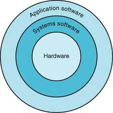
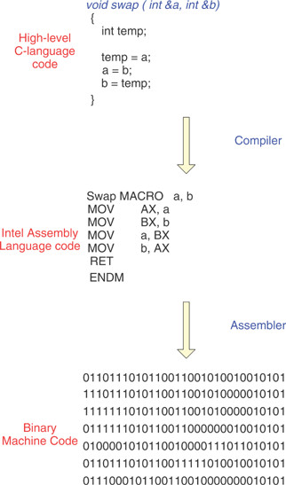
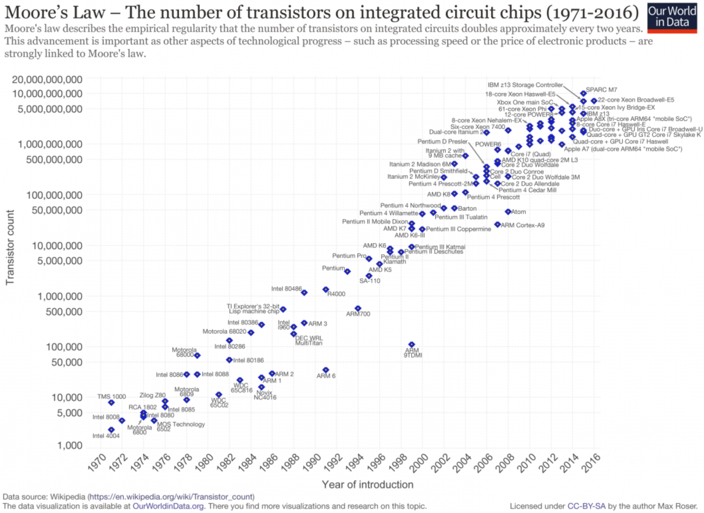

Tecnologias e aplicações de computadores
Tecnologias computacionais
O que são tecnologias computacionais?
Em poucas palavras, um sistema computacional é um conjunto de dispositivos eletrônicos que utilizamos para todo um processamento de alguma informação, ou seja, união de hardware (parte física) e software (parte lógica).
- A sociedade como elemento de constante transformação (como, e por quê?)
- A sociedade da informação, como é chamada por inúmeros autores, que se fundamenta na Informação, e a depender da granularidade e nível dessa informação, dados, ou seja, na menor unidada da informação, como um bem, impulsiona:
- Desenvolvimento social e econômico;
- Criação de conhecimento;
- Produção de riquezas e novas oportunidades;
- Contribui para o bem-estar e qualidade de vida das pessoas\ldots
É importante destacar que temos um processo que é (ou tende a ser) "eficaz" e "eficiente", envolvendo a computação e problemas (ou necessidades) do ser humano. Os mecanismos que tratam dados e informações estão se tornando `inteligentes' o suficiente para que o tempo de resposta seja muito mais rápido e eficiente.
Computação e Sociedade
Quais são os impactos da computação na sociedade?
- Necessidades da sociedade
- Internet
- Supercomputação
- Previsão meteorológica
- Simulações
- Forma de negócios e interações sociais
- Realidade virtual e aumentada
- Computação pervasiva e ubíqua
Classes de Computadores
- Desktops e notebooks
- Propósito geral; custo/benefício;
- Desempenho;
- Servidores
- Comunicação;
- Escalabilidade; e,
- Disponibilidade
- Embarcados
- Restrições de desempenho;
- Custo/capacidade de processamento
Desempenho de um programa
- Leva-se em consideração:
- Algoritmo utilizado;
- A linguagem de programação:
- compilada vs. interpretada vs. híbrida;
- Arquitetura e geração do dispositivo:
- O número de instruções que podem ser executas por ciclo de clock;
- Interrupções e Memória;
- Sistemas de I/O; Armazenamento. Sistema Operacional.
Desempenho de um programa
- O algoritmo (escopo de outras disciplinas):
- Diretamente relacionado ao número de instruções do código-fonte ao número de operações/interrupções de entrada e saída.
Afetado por:
- Linguagem de programação;
- Compiladores;
- Arquiteturas.
Estes determinam o número de instruções de máquina para cada instrução em nível computacional.
Desempenho de um programa
Afetado por:
- Sistemas de I/O (Hardware e Sistema Operacional);
- Determinam a velocidade em que as operações podem ser ser executadas;
Quando pensamos em desenvolver uma aplicação
- O que está envolvido:
- Precisamos ter em mente que vamos nos utilizar de vários conceitos, e interferir com várias camadas computacionais:
- Aplicação de Software;
- Sistemas de Software;
- Hardware

Visão simplificada: Software ou Aplicação (Apps)
- Camada de abstração mais externa;
- Desenvolvido em liguagem de programação de alto nível;
- A depender do paradigma, pode conter várias camadas;
Visão simplificada: Sistema de Software
- Compilador: responsável por traduzir o código desenvolvido (alto nível) para a linguagem Assembly;
- Montador: responsável por traduzir instruções simbólicas para binário (instruções de máquina).
- Sistema Operacional: é responsável pela supervisão e controle dos recursos de um computador ao executar programas (instruções de vídeo, alocação de memória, impressão, pendrives\ldots).

Abstrações
- As abstrações ajudam a tratar a complexidade;
- Revelam detalhes quando necessário;
- Uma das abstrações mais importantes é a interface entre o hardware e o software de nível mais baixo:
- Arquitetura do Conjunto de Instruções (ISA - Instruction Set Architecture);
Abstrações - ISA
- ISA
- Instruções, registradores, acesso à memória, recursos de I/O;
- Interface binária da aplicação;
- Interface de Sistema de Software;
- Implementação;
- Hardware que obedece a abstração de uma ISA.
Evolução das Tecnologias
| Ano | Tecnologia usada em Computadores | Performance relativa/custo por unidade |
|---|---|---|
| 1951 | Tubos à vácuo | 1 |
| 1965 | Transistores | 35 |
| 1975 | Circuitos Integrados | 900 |
| 1995 | Circuitos Integrados em larga escala | 2.400.000 |
| 2005 | Circuitos Integrados em ultra larga escala | 6.200.000.000 |
Lei de Moore

Referências
- White, S. A Brief History of Computing. Disponível em: http://trillian.randomstuff.org.uk/~stephen/history/. Acesso em: 9 ago. 2021.
- Computer Pioneers and Pioneer Computers (part 1): \url{https://youtu.be/qundvme1Tik}
- Computer Pioneers and Pioneer Computers (part 2): \url{https://youtu.be/wsirYCAocZk}
- Portal Educação. O que é um sistema computacional? Disponível em: https://siteantigo.portaleducacao.com.br/conteudo/artigos/informatica/o-que-e-um-sistema-computacional/46697. Acesso em: 25 set. 2021.
- UNIVESP. Vídeo Organização de Computadores - Aula 01 - Abstrações e tecnologias computacionais. Disponível em: https://youtu.be/HgA-oXOV7kI. Acesso em 10 Ago. 2019.